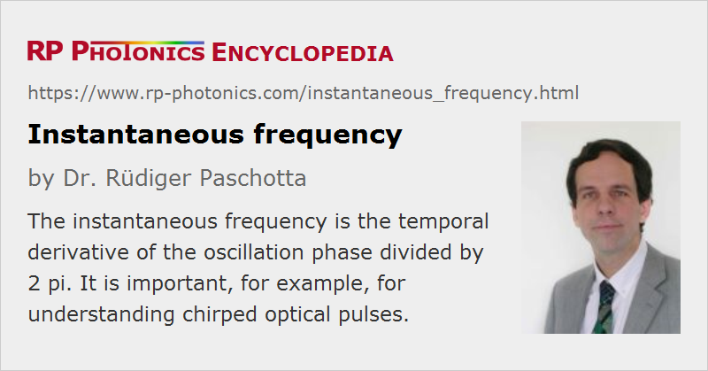

Instantaneous Frequency
Definition: temporal derivative of the oscillation phase divided by 2π
More general term: optical frequency
German: instantane Frequenz, Momentanfrequenz
Categories: general optics, light pulses
Formula symbol: ν, νi
Units: Hz
How to cite the article; suggest additional literature
Author: Dr. Rüdiger Paschotta
The instantaneous frequency is a useful concept for describing non-monochromatic (polychromatic) signals. It is defined as
i.e. essentially as the temporal derivative of the oscillation phase φ. (Without the factor 1/2π, one would have the instantaneous angular frequency.) In contrast to a Fourier frequency, the instantaneous frequency is generally a time-dependent frequency. The instantaneous frequency of a sinusoidal signal is constant and equals the oscillation frequency, as expected.
The concept of the instantaneous frequency is particularly important in the context of frequency noise and phase noise, but it is also applied to chirped optical pulses (Figure 1), which have a time-dependent instantaneous frequency. The basic idea is intuitive, actually more than that of Fourier frequencies. The same concept is used e.g. in music: music scores essentially specify notes as time intervals for which the instantaneous frequency has a certain value (corresponding to the pitch of one voice, and disregarding overtones). However, the concept can become problematic for complicated signals, e.g. for white noise. In the context of lasers, the instantaneous frequency can be easily defined for single-frequency lasers, whereas for multimode lasers one would first have to separate the different frequency components (with some filtering technique) before retrieving their instantaneous frequencies. The instantaneous frequency is also useful in the context of chirped optical pulses, where the instantaneous frequency varies during the pulse.
Note that the Fourier spectrum of an oscillating signal (in optics, the optical spectrum) does not represent the probability distribution of instantaneous frequencies, and that the linewidth measured from such a spectrum is not an r.m.s. (root mean squared) value of the instantaneous frequency. The relation between instantaneous frequency and Fourier frequency is significantly more subtle than that.
The time dependence of the instantaneous frequency can sometimes be estimated from a spectrogram. However, a plot of instantaneous frequency versus time generally does not carry the same information.
Measuring the Instantaneous Frequency
The instantaneous frequency of an electronic signal (e.g. a beat note) can be obtained using a phase-locked loop (PLL), containing a voltage-controlled oscillator (VCO) and phase discriminator in a feedback system which forces the VCO to follow the oscillation of the input signal. The input signal of the VCO can be used as a measure of the instantaneous frequency.
The basic idea of this approach can also be utilized in the form of a software phase tracker, which evaluates the instantaneous frequency of an already recorded signal. This approach is simple to implement but has some flaws, particularly the limited bandwidth and delayed response. Significantly more powerful, but also more complicated techniques utilize fast Fourier transforms.
Questions and Comments from Users
Here you can submit questions and comments. As far as they get accepted by the author, they will appear above this paragraph together with the author’s answer. The author will decide on acceptance based on certain criteria. Essentially, the issue must be of sufficiently broad interest.
Please do not enter personal data here; we would otherwise delete it soon. (See also our privacy declaration.) If you wish to receive personal feedback or consultancy from the author, please contact him e.g. via e-mail.
By submitting the information, you give your consent to the potential publication of your inputs on our website according to our rules. (If you later retract your consent, we will delete those inputs.) As your inputs are first reviewed by the author, they may be published with some delay.
Bibliography
| [1] | Spotlight article of 2007-10-11: "Understanding Fourier Spectra" |
See also: frequency noise, chirp, linewidth, spectrograms, The Photonics Spotlight 2007-10-11
and other articles in the categories general optics, light pulses
|  |
If you like this page, please share the link with your friends and colleagues, e.g. via social media:
These sharing buttons are implemented in a privacy-friendly way!